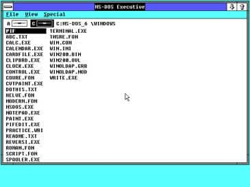

Com toda certeza todas as atualizações do Windows tiveram grande impacto no tão famoso sistema operacional que utilizamos nos dias atuais porém alguns pontos se destacam mais que os outros por diversos motivos como utilidade, marco histórico, impacto na época e etc.
Começando com o Windows 2.0 lançado em 1987 ele trouxe consigo a capacidade de um aplicativo sobrepor o outro e foi a partir dai que foi disponibilizado o gerenciamento de minimizar e maximizar uma tela, além das teclas do teclado ganharem funcionalidade os conhecidos atalhos
No Windows 3.x lançado em 1990 se iniciou o sucesso de crítica e público devido a sua capacidade de multitarefas e facilidade de uso além de trazer três grande inovações dentre elas temos: Gerenciador de Programas, gerenciador de arquivos e o visual padrão do Windows pelos próximos 5 anos (ou seja até o Windows 95)
O Windows 98 foi a primeira grande atualização com objetivo de acesso a internet, nele foi incluído o internet explorer tornando-se parte do sistema operacional e introduziu também o Active Desktop que permitia mostrar sobre o wallpaper informações e widgets originais da web que eram atualizadas sempre que o computador fosse conectado a internet, além de introduzir também o suporte a USB, drive de DVD e barramento AGP.

Finalmente temos o Windows XP que desde o seu lançamento em 2001 o Windows se tornou realmente um sistema operacional, ou seja ele não dependia mais do MS-DOS igual suas versões anteriores a partir daqui sendo baseado no Windows NT, sua interface foi alterada, tornando-se assim mais colorida sem a coloração focada no cinza, além de que o sistema operacional ganhou mais desempenho e estabilidade, suporte as novas tecnologias como o USB 2.0, suporte para os novos monitores LCD, troca rápida entre usuários e a Central de Segurança do Windows XP Service Pack 2, que auxiliava a segurança e a proteção antivírus instalada
O Windows 7 lançado em 2009 conhecido como uma das melhores atualizações até hoje pelo usuários, se destacou principalmente pela falha da atualização anterior o Windows Vista e seu sucessor o Windows 8, apesar de ser conhecido por preencher essas brechas nas atualizações do sistema operacional, o mesmo trouxe novidades como: suporte aprimorado para diversos aspectos técnicos modernos, dentre eles temos o SSD, os processadores com múltiplos núcleos, adicionou também a possibilidade do usuário alterar a interface de uso para por exemplo, prender apps a barra de tarefas, adicionar atalhos no desktop para tarefas comuns dentro de apps, o recurso de colocar dois programas do lado do outro cada um ocupando metade da página, facilitando assim rodar dois apps lado a lado
Chegando então na última atualização lançada, (até o momento) temos o Windows 10 lançado em 2015 que trouxe uma mistura entre o antigo design do Windows 7 e juntou com as inovações do Windows 8, com isso atingindo o objetivo da Microsoft de juntar os usuários antigos até então acostumados com o sistema operacional antigo e atrair pessoas mais novas com um visual mais moderno e detalhista que trouxe o Windows 8, além de também disponibilizar a possibilidade de você migrar do Windows 7 para o 10 de forma gratuita com suas atualizações entregues a partir do Windows Update também sem custo adicional ao usuário, permitindo assim que o Windows 10 que utilizamos hoje seja bem diferente do lançado a 5 anos atrás ou até mesmo de 2/3 anos.
Algumas Curiosidades
Apesar dos diversos acertos como o Windows 7 e XP, a Microsoft já lançou diversas versões com vários erros, como os famosos Windows Vista e Windows ME
Ainda sobre o Windows ME ou Millenium Edition, em junho de 2020 a revista PC World nomeou o mesmo como o quarto pior sistema operacional de todos os tempos